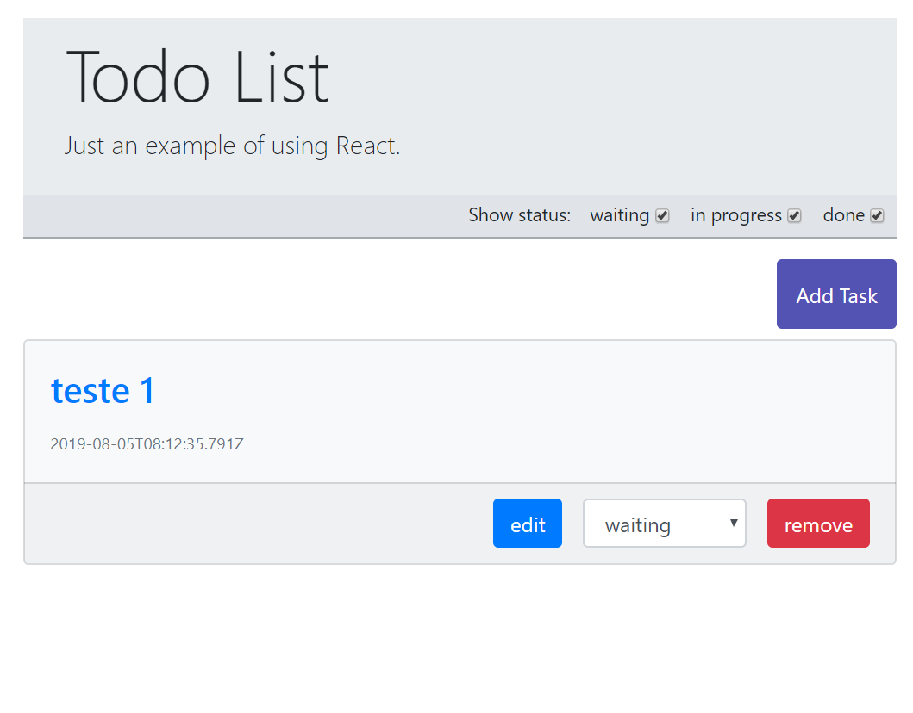
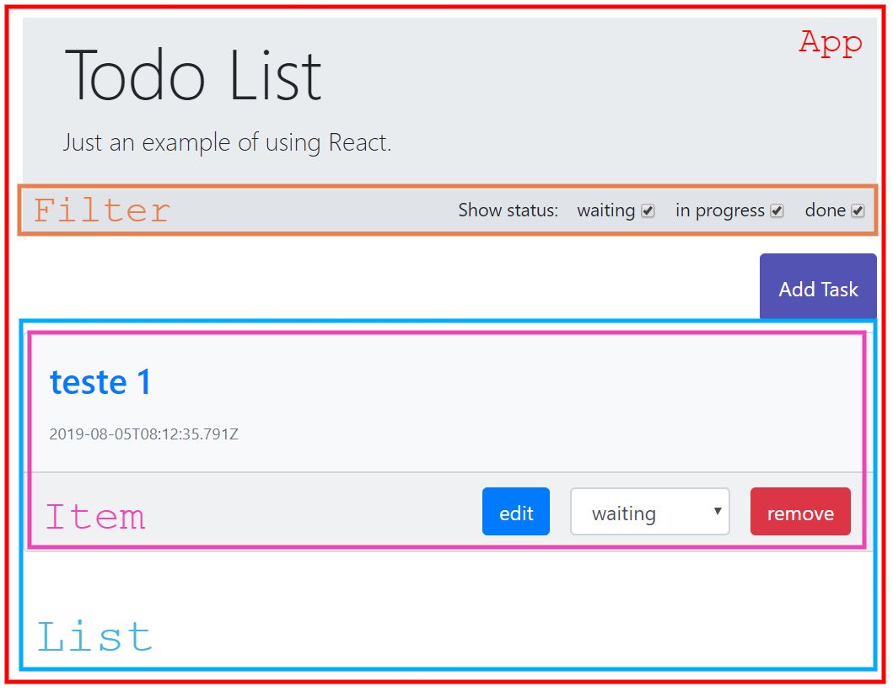
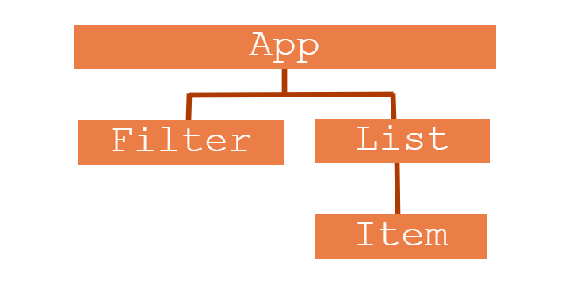
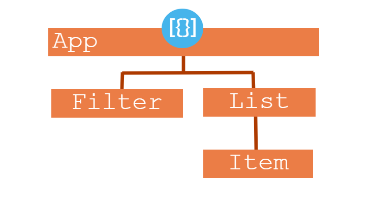
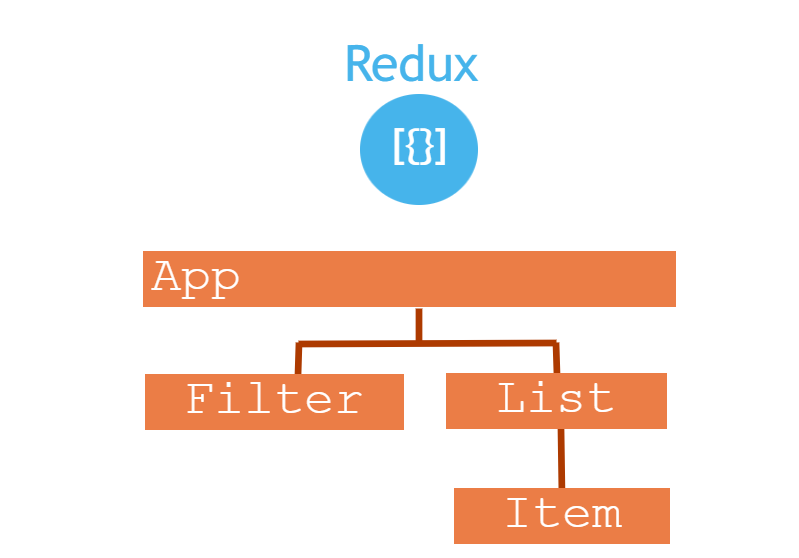

A pouco mais de 1 mês precisei aprender react. Li muitas coisas na internet e apanhei um pouco no início para criar meus primeiros componentes, mas no final desenvolvi um pequeno projeto para estudo. Um clássico to-do list.
Antes de continuarmos, gostaria de mostrar o resultado final.

Depois de saber como seria o design final, separei em componentes e dei nomes para cada um deles.

Uma outra maneira de representar essa hierarquia de componentes seria em formato de fluxograma.

Com relação à API, trata-se de um CRUD bastante simples. Criei um único serviço que faz um GET, um POST, um PUT e um DELETE. Nosso arroz com feijão de cada dia. Mas a questão aqui é: onde armazenar os dados? Devemos ter em mente que tanto o componente List quando o componente Filter deverão ter acesso aos dados.
A resposta óbvia: armazene os dados no componente pai mais próximo cujos filhos terão acesso compartilhado aos dados. E foi exatamente isso que eu fiz. O meu componente App.js faz a requisição http e armazena os dados do servidor. Estes, por sua vez, são passados via props para os componentes que efetivamente vão usar esses dados.

Em um projeto simples não há problema nenhum com essa abordagem. Mas e se a aplicação começa a crescer? Todos os dados ficariam num único componente, o pai de todos, chamado App.js. Isso não parece uma boa ideia.
E é para resolver esse problema que surgiu o Redux (na verdade o Redux surgiu depois do Flux, mas eu nem conheci esse sujeito, rs).
O Redux nada mais é do que um gerenciador de estado da aplicação inteira que reside fora da aplicação.

O estado da aplicação pode ser entendido como uma característica num determinado momento. No exemplo da todo-list, o estado são os dados (as tarefas) e o filtro para visualização (quais tarefas são visíveis na tela, as aguardando, as em progresso ou as finalizadas).
Então quer dizer que todos os dados da aplicação devem ficar sob responsabilidade do Redux?
Calma lá jovem. O Redux é um gerenciador de estado que reside fora da aplicação. Ele cria uma única fonte de dados confiável para a aplicação inteira. Mas nem tudo precisa estar dentro do Redux, ou seja, coloque no Redux só o que deve ser compartilhado entre componentes.
Deixando de lado o exemplo da todo-list, vamos aos conceitos do Redux.
State
O estado, como já vimos, é uma característica da aplicação num determinado momento. Pense numa página de um e-commerce. O usuário está visualizando um produto e está vendo o seu preço na tela. Mas o frete ainda não foi calculado. Então o usuário digita o CEP de sua residência e o preço muda. Ah! Mas o usuário possui um cupom de desconto. Então ele o digita também o código do cupom e o preço muda novamente. Percebeu quantas mudanças de estado essa mesma tela sofreu? “Preço sem frete”, depois “preço com frete” e depois “preço com cupom de desconto”. E poderia ter muito mais.
Store
Se você já desenvolveu algo com o React você sabe que componentes podem ter seus próprios states, que é encapsulado e 100% controlado pelos componentes que os contém. Pense no store como um state global. Alterar algum estado do store pode alterar qualquer um dos componentes da página.
No store, guardamos todas as informações que podem ser utilizadas por mais de um componente.
Agora sabemos que na store guardamos o state da aplicação. Mas como podemos fazer para alterar esse state? (se você já leu sobre Redux, sabe que o state é imutável, mas por enquanto quero deixar as coisas mais simples possível).
Actions
Conseguimos “alterar” o estado da aplicação através de actions. As actions são objetos javascript simples que descrevem o que deve ser feito. Esses objetos devem possuir uma propriedade type. No exemplo do e-commerce, uma action poderia ser {type: ‘CALCULAR_FRETE’}, ou talvez {type: ‘CALCULAR_DESCONTO’}.
Se você tiver um olhar atento pode ter se perguntado: Como calcular o frete? Qual o código do cupom? Calma hora nessa, padawan! Um pouco por vez ;)
Reducer
Antes de falar do que são reducer, vamos resumir o que vimos até aqui.
Store é o estado geral da aplicação inteira. Para que eu consiga “alterar” algo na store eu preciso de uma action, que nada mais é do que um objeto javascript simples cuja propriedade type descreve o que precisa ser feito. Hum! Então no store eu tenho o state (como se fossem dados) e por outro lado eu tenho as actions que vão dizer como esses dados devem ser alterados. Ok! Mas quem é que vai cuidar para saber o que fazer com os dados dependendo da action?
Sim, isso mesmo, o Reducer.
Apesar do nome assustador, o reducer é simplesmente uma função que descreve como nossas actions irão transformar o state no próximo state. Opa! Próximo state? Como assim? Isso mesmo, nós nunca alteramos diretamente um state porque ele é imutável conforme spoiler acima. Na verdade, o reducer SEMPRE vai retornar o próximo state, nunca alterá-lo diretamente.
CUIDADO com funções que alteram a origem dos dados dentro de funções reducers, como splice(), push(), pop() etc.
O reducer recebe dois argumentos (o state e a action) e deve sempre retornar um novo state.
Quero resumir um pouco mais tudo o que foi dito até aqui:
Store - estado global da aplicação.
Action - Objeto javascript que descreve a intensão de “mudar” o store.
Reducer - função que vai decidir se altera ou não o a store dependendo da action. E como dever ser essa alteração.
Vamos ver um pouco de código?
O Redux não é uma tecnologia, mas sim um padrão que foi implementado por várias tecnologias, como o react, angular e até mesmo o vuejs.
Neste nosso primeiro exemplo, vou mostrar o vanilla redux, ou seja, sem usar a implementação de nenhuma lib/framework.
O primeiro passo é iniciarmos um projeto e instalarmos o redux. Para não ter que nos preocuparmos com o servidor, webpack e toda a arquitetura que um projeto precisa ter, vamos usar o create-reate-app para nos entregar um boilerplate pronto. Aproveitamos e instalamos também o redux
1 | $ npx create-react-app first-redux |
Depois de criar, instalamos o redux.1
$ npx i redux
Abra o seu diretório no seu editor de código do coração.
Nesse exemplo simples, vamos escrever tudo no index.js. A ideia aqui é fixar os conceitos. O seu index.js deve ficar da forma como segue:
1 | import React from 'react'; |
Repare que removi o componente App tanto da importação quando do nosso React.render(). Substituí o nosso
Também importei o { createStore } from ‘redux’; e criei uma const chamada store que recebe uma nova store criada pela função createStore(). Mas tem algo errado aqui.
Uma store precisa estar vinculada à um reducer, pois o reducer é a função que irá manipular o state da store. Vamos primeiro criar o nosso reducer. (Lembra o que é um reducer? Sim, uma função que recebe state e uma action e retorna um novo state). Depois de criar o reducer precisamos vinculá-lo à nossa store. Fazemos isso passando o reducer por parâmetro.
1 | function reducer(state = 0, action){ |
Algumas observações:
- O state precisa ter um estado inicial. no caso, vamos começar com o valor 0.
- O Reducer recebe o action, que descreve a intensão de mudar a store. No exemplo acima, temos duas intensões possíveis, incrementar ou decrementar. Eu gosto de escrever algumas coisas em português em artigos didáticos ou em aulas. No trabalho no mundo real, escreva tudo em inglês, ok!
- dependendo do type da action, será retornado um novo state. que será o state inicial mais ou menos um.
- Agora store e reducer estão unidos, juntinhos, pois ao criar a store passamos a função reducer por parâmetro.
Ei, quero mudar a store.
Agora que store e reducer estão ligados, disparar uma action fará com que a função reducer seja executada. Para disparar uma action usamos o método dispatch da store
1 | store.dispatch(minha-action) |
Mas o que é uma action mesmo? Se você respondeu que é um simples objeto javascript com uma propriedade type, parabéns! Logo:
1 | store.dispatch({type: '...'}) |
O que queremos alterar? Incrementar? Decrementar? Dobrar?
1 | store.dispatch({type: 'INCREMENTAR'}) |
Opa! Temos a ação DOBRAR no nosso reducer? Não! O que vai acontecer? Nada. O state anterior será retornado.
Para conseguir ver alguma coisa ao mudarmos o state, vamos mostrar no console. Mas tenha em mente que nessa hora você deveria atualizar a interface do usuário. Se estiver usando o react pra valer, agora deveria chamar o setState.
1 | store.subscribe( () => console.log( store.getState() ) ) |
Contudo, veremos como implementar o redux com react no próximo artigo. A atualização da view será feita automaticamente.
Agora vamos ver como passar parâmetro para o reducer.
Sabemos que o reducer recebe o state anterior e uma action. A action possui o atributo type. Contudo, a action pode ter mais parâmetros. Comumente você verá por aí o atributo data ou payload. Nesse exemplo, pra ficar didático, chamarei de parâmetro.
1 | store.dispatch({type: 'DECREMENTAR', parametro: 3}) |
Agora essa action será passada para o reducer. Não tem muito o que explicar aqui, o código fala por si só:
1 | function reducer(state = 0, action){ |
Repare que se não passar parametro na action, é incrementado ou decrementado 1.
Abaixo o código completo:
index.js1
2
3
4
5
6
7
8
9
10
11
12
13
14
15
16
17
18
19
20
21
22
23
24
25
26
27
28
29
30
31
32
33import React from 'react';
import ReactDOM from 'react-dom';
import './index.css';
import * as serviceWorker from './serviceWorker';
import { createStore } from 'redux';
function reducer(state = 0, action){
let param = action.parametro || 1;
switch (action.type) {
case 'INCREMENTAR':
return state + param
case 'DECREMENTAR':
return state - param
default:
return state
}
}
const store = createStore(reducer)
store.subscribe( () => console.log( store.getState() ) )
store.dispatch({type: 'INCREMENTAR', parametro: 3})
store.dispatch({type: 'INCREMENTAR'})
store.dispatch({type: 'DECREMENTAR', parametro: 2})
store.dispatch({type: 'DOBRAR'})
const element = (
<div>
<p>Usando o Redux</p>
</div>
)
ReactDOM.render( element, document.getElementById('root'));
Conclusão
Temos um exemplo funcional, contudo, você deve ter percebido que estamos usando o Redux para armazenar apenas um único dado (ou um único state) que é um número, que através das actions será incrementado ou decrementado. Porém, como podemos fazer para ter mais states?
Bom, essa foi apenas uma introdução. Espero que você tenha curtido até aqui. No próximo artigo pretendo mostrar como usar o redux com o React, além de mostrar como termos mais de um state na mesma store. Aguarde!